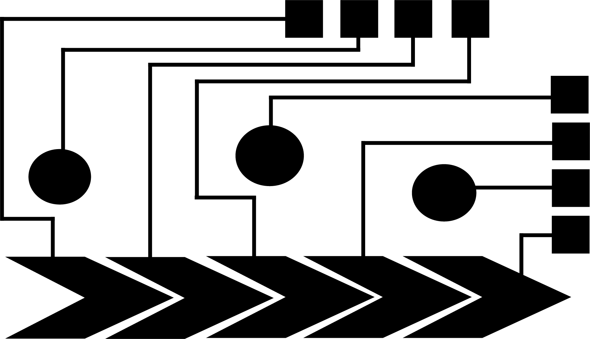
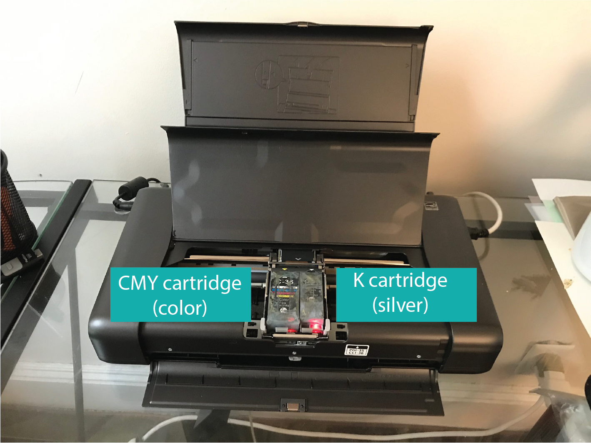
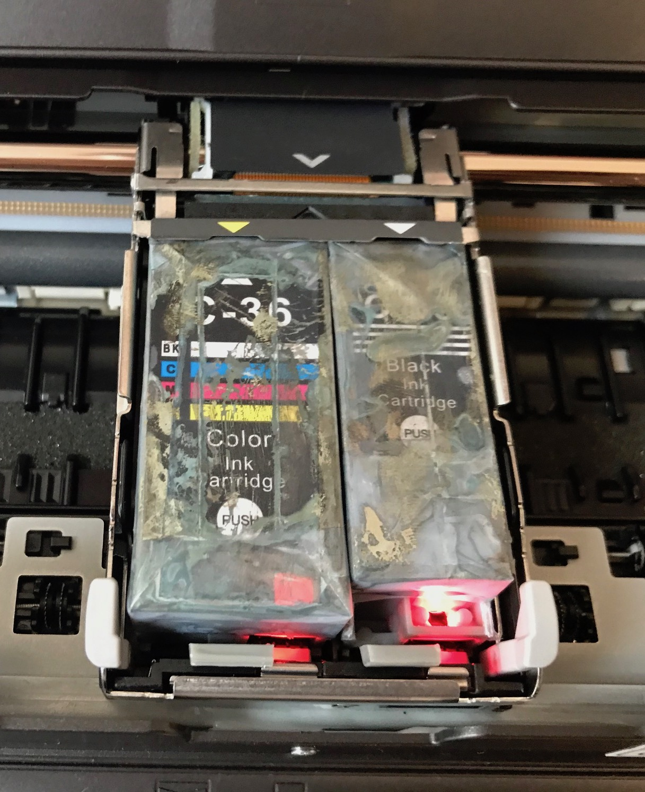
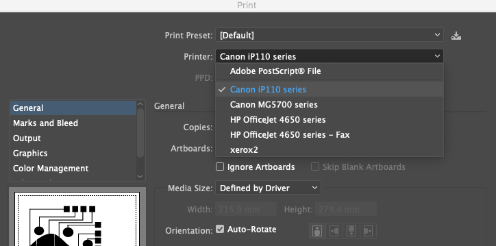
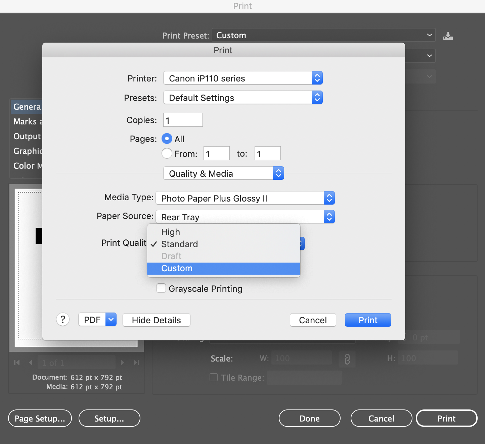
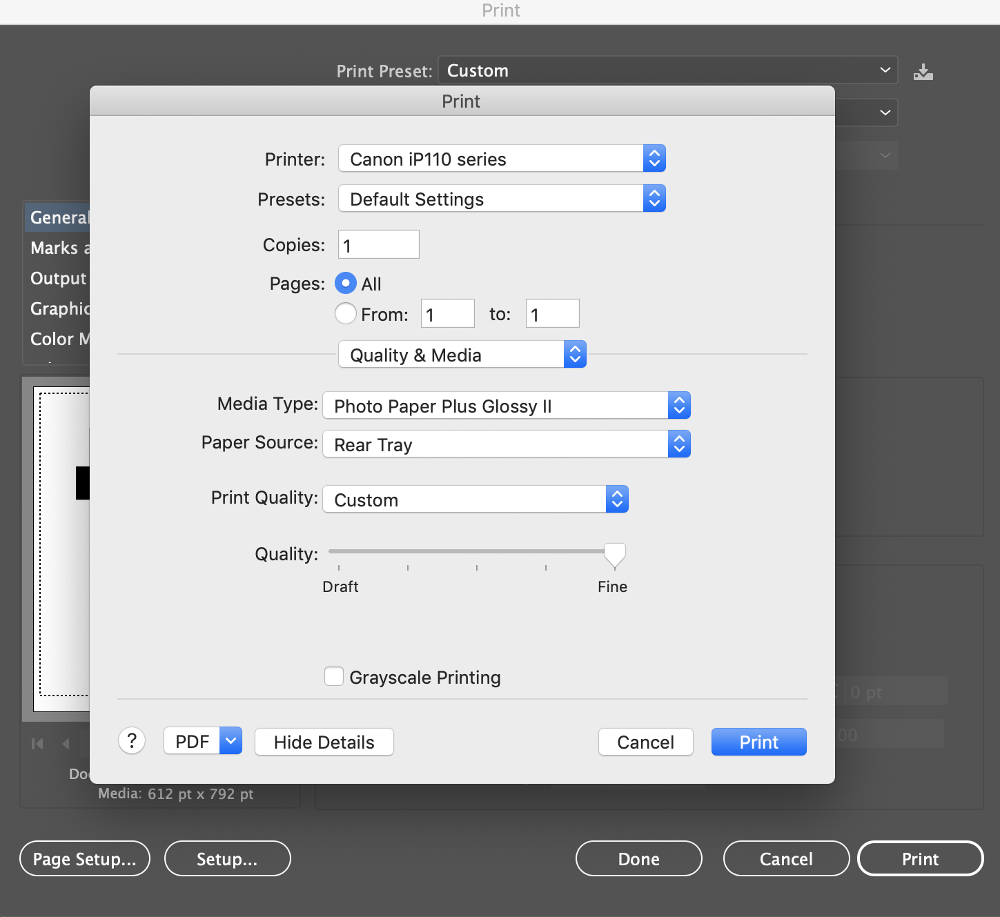
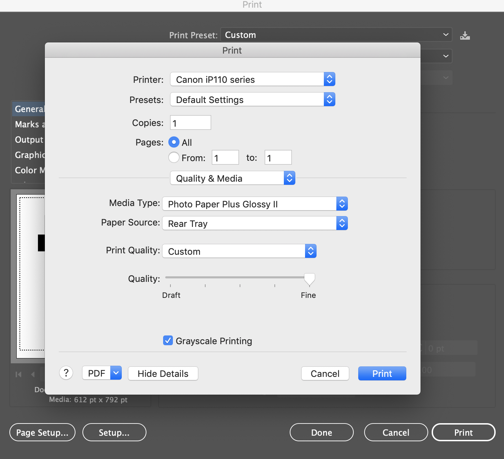
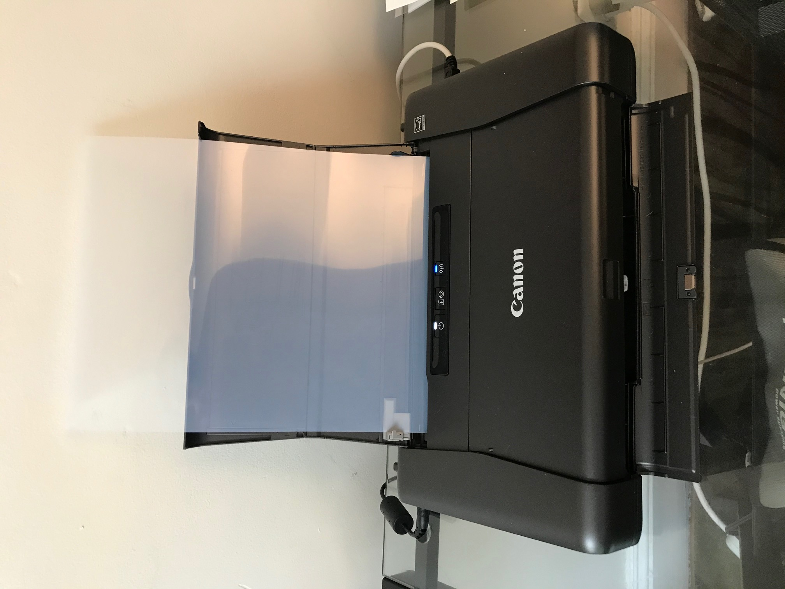
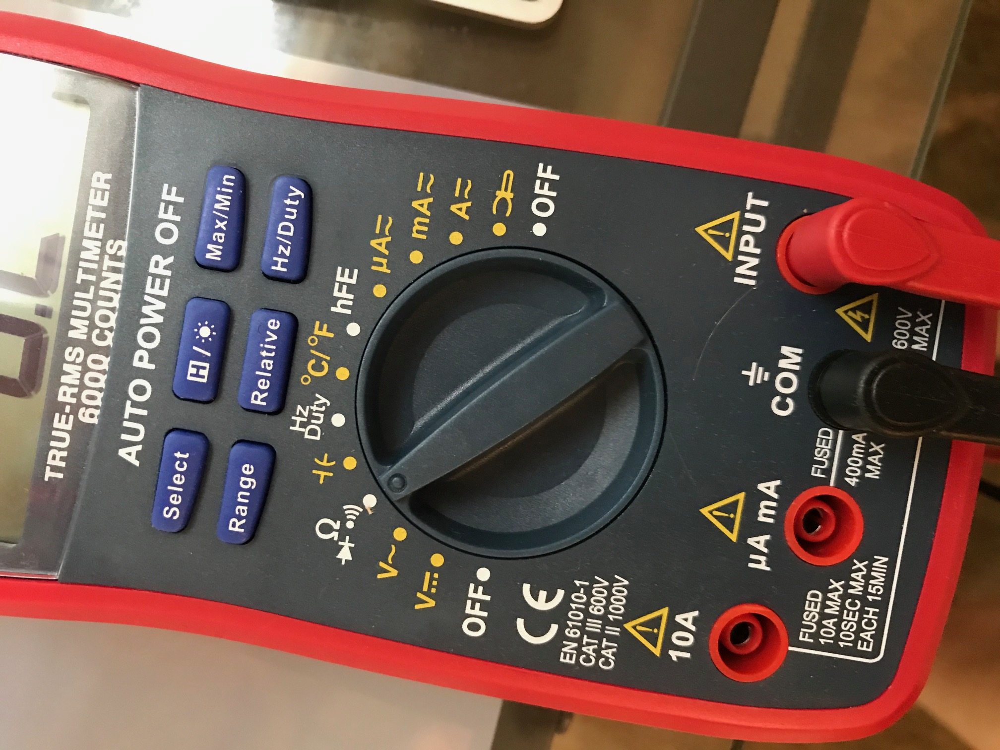
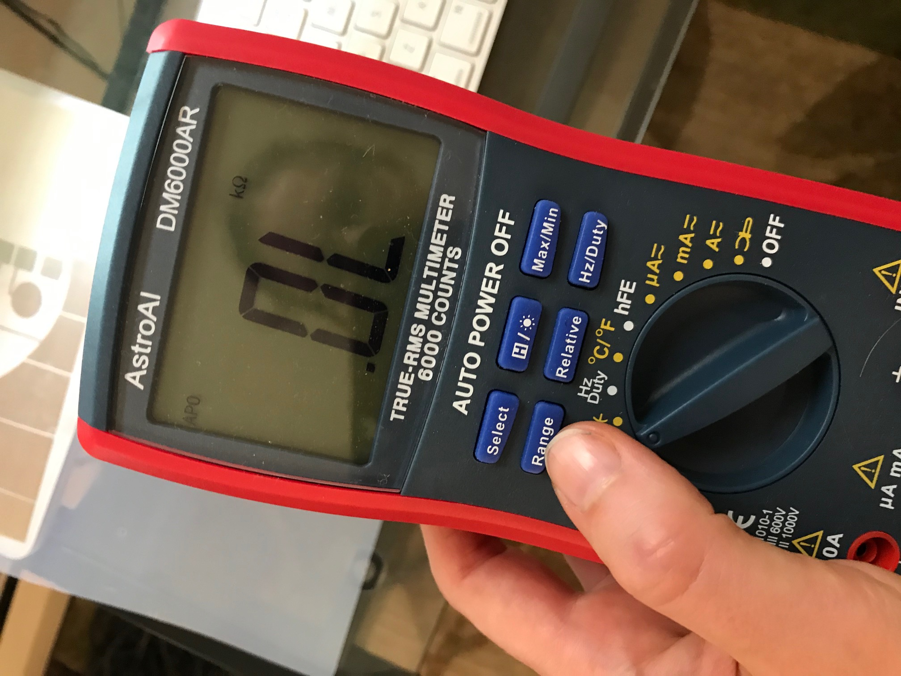

6.810 Engineering Interactive Technologies (fall 2020)
Conductive Inkjet Printing: Printing the Circuit
Check your Design Before Printing
Before printing, double check that all your circuit lines are pure black, i.e. CMY = 0 and K = 100.

Also double check that your design has two seperate layers:
Layer 1: visual design
Layer 2: circuit design
You need to be able to turn them on/off individually since we will print the circuit in a first pass, then reinsert the paper and then print the visual design on top.

Note, that if your visual design contains any pure black (K = 100), it will not be printed at all.
To have black in your visual design, you need to set the area to C = 100, M = 100, Y = 100, which results in a close alternative to black.
Print Conductive Layer
For our class, we are using two 2D inkjet printers for your design files (i.e. circuit and visual), for better print quality and less hassle.
We will be printing the design files on 2 sides of the same photo paper.
However, we could also use the same 2D printer to print both your design files (i.e. circuit and visual) in case you want to try it out in the future on your own and don't have the budget.
The reason we can do this is that most 2D printers have two cartridges: a CMY (or CMYK depends on the company) cartridge for color printing and a K-cartridge for black.
You can then empty the 'K' cartridge and fill it with silver ink, so anything in your drawing that is 'K' (pure black) will be printed in silver.


Printing your Design in Two Passes ('Color' vs. 'Grayscale' mode)
While we can use the same printer for both visual and circuit design, we cannot print color (CMY) and silver (K) at the same time (same pass).
The reason is that in order to 'force' the printer to use the 'K' cartridge, we need to select 'grayscale' in the printer driver and that naturally doesn't allow for color.
On the contrary, in order to 'force' the printer to use the 'CMY' cartridge, we select full color, which then would try to print the black wires and touch areas with the 'CMY' catridge rather than using the 'K' cartridge that is filled with silver.
Therefore, we do two seperate passes, i.e. we first print all silver, take the paper out, reinsert, and then print the color.
Print Settings for Printing Silver
If you want to print from your own laptop, please make sure you install the Printer driver for the Epson EcoTank ET-2760.
Open your Circuit Design File.
Go to print, and from the 'Printer' dropdown select the 'Canon iP110 series'.

Next, click 'setup' (bottom left corner), then 'continue'.

Go to 'Quality and Media' in the dropdown, then select 'Media Type' and 'Photo paper' and 'Photo Paper Plus Glossy 2'.

Then go to 'Print Quality' and select 'Custom' and put the resolution to the highest 'Fine' setting.


Don't forget to click the checkbox for 'Grayscale' Printing, since we want to use the 'K' cartridge, which has the silver loaded.

Next, insert the paper.
The paper has two sides, a sticky side and a non-sticky side.
The sticky side should be facing up.
If you are not sure which side is which, you can lick your finger and touch each side of the paper in the corner. The sticky side will have a white shine and the other side will show nothing. So the white shine should be facing up.


Now you are ready to hit the print button.


Test if your Silver Print Works with a Multi-Meter
Before we print the color layer, let's first check if the silver layer is conductive or if anything went wrong during the print.
The print is successful, i.e. highly conductive and resistance low if silver was deposited over the entire area.
The print was unsucessful if there are many tiny gaps, i.e. conductance will be low and resistance high.
Resistance is also influenced by the lenght of the wire and its thickness as mentioned above.
A wider trace allows the current to flow better and thus leads to higher conductivity, whereas as longer trace accumulates resistance on its path therefore has lower conductivity (higher resistance).
To check the resistance, we can use a Digital multimeter (DMM).
To use the multi-meter, first set it to 'resistance' mode.

Next, set the sensitivity to the highest by pressing the 'range' button a bunch of times until the dot is at the front.

Next, hold the two measurement points at the beginning and end of a wire to measure the resistance along the trace.

Here we have a fantastically low resistance of 1ohm.
If you see a OL, your trace is broken and the resistance was so high it couldn't be displayed because it was out of range.
Print Settings for Printing Color
Open your Visual Design File.
Repeat the steps from above (i..e choose glossy paper, high quality print etc) and do not hit the 'grayscale' checkbox since we want to print in color for higher visual quality.
We will print the music card design on the back side of the printed silver circuit.
Make sure that you flip the photo paper with correct rotation so that the music card visual design and the circuit design matches up.
Repeat the steps from above (i..e choose glossy paper, high quality print etc) but do not hit the 'grayscale' checkbox since we want to print in color this time.
Next, insert the paper into the printer again.
Insert the paper in the same orientation as it came out, otherwise your drawing may be flipped.
The silver side should be facing upwards, so that you are printing directly on top of the silver.